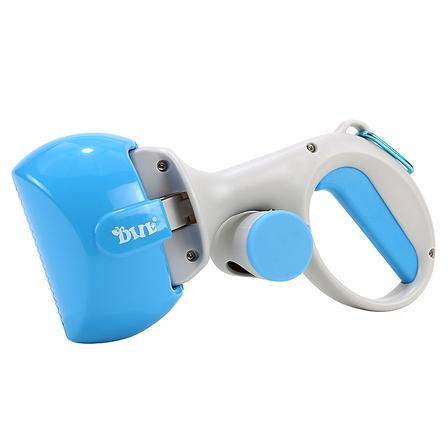

Teardown 05
免脏手狗狗铲屎器

用户
遛狗人群；清理狗狗粪便时，不想直接接触污物，嫌弃普通垃圾袋容易弄脏手、操作别扭
场景
户外遛狗，狗狗排便之后，快速捡拾粪便，投入垃圾桶
当前方案痛点
普通拾便袋，需要手伸进袋子里去抓粪便，隔着袋子依然有心理不适感，袋子容易破，容易沾到手上；传统长柄夹体积大，出门携带不方便
创意方案
工具自带可更换垃圾袋，套在铲头；按压操作，铲起粪便后袋子自动包裹封闭，全程手不接触污物，直接丢进垃圾桶
核心价值
隔离用户和污物，消除心理抵触，做到全程不脏手；体积小巧，方便遛狗随身携带
方案短板与边界
垃圾袋属于消耗品，需要持续补充耗材；铲头开口尺寸有限，过大的粪便不好拾取；袋体破损依旧会有污染风险
底层设计思想
在用户和脏污风险之间增加一层自动隔离机制，把高抵触、高风险的接触动作封闭在工具内部，避免用户直接参与
同思想延伸案例
- 一次性马桶垫：隔离人体与马桶接触面，规避脏污接触
- 自动采样拭子装置：用户不用直接触碰样本，由器械完成采集
AI 机会迁移
在用户和危险/繁琐的底层操作之间增加隔离层；用户只发起简单指令，复杂、有风险的底层过程交给系统内部完成，用户不用感知细节